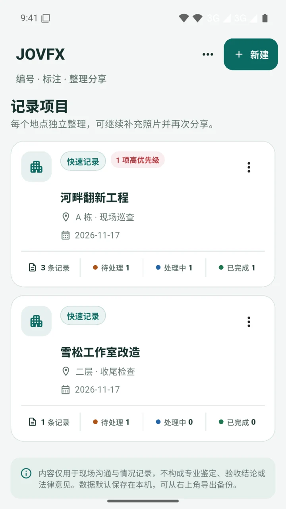
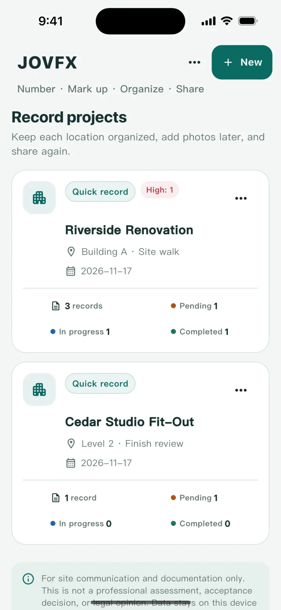

快速拍下现场
从相机拍摄或相册导入，按处理前、处理后归类。快速模式只需照片与说明，其他字段以后再补。
Take a photo or choose one from your library, then group it as before or after. Quick mode needs only photos and a note. Add other details later.
用 JOVFX 拍摄或导入现场照片，整理处理前后对照、标注重点，并将照片和说明合成 PDF 记录。适用于 iPhone、iPad 和 Android 设备。
Capture or import site photos in JOVFX, group before and after images, mark what matters, and turn photos and notes into a PDF. For iPhone, iPad, and Android.


用一个连续流程把现场情况记录下来，减少遗漏，也方便稍后继续补充。
从相机拍摄或相册导入，按处理前、处理后归类。快速模式只需照片与说明，其他字段以后再补。
Take a photo or choose one from your library, then group it as before or after. Quick mode needs only photos and a note. Add other details later.
使用方框、箭头和文字直接标注照片，让查看者不用猜测你想说明的位置与变化。
按项目自动编号，选择简洁或完整字段，在设备上生成中文或英文 PDF，并随时再次预览。
使用系统分享面板，把 PDF 或本地备份交给你选择的接收方或服务。
信息可以逐步补齐，不必为了创建一条记录先完成一份长表单。
每条记录可包含多张处理前与处理后照片，编号、说明、状态和责任信息始终归在同一条记录下。
自行决定是否包含位置、状态、优先级、负责人、期限与项目资料。
导出 .prbackup 文件，并在另一台设备恢复。恢复前会明确提示替换当前本机数据。
位置、优先级、负责人、期限与处理状态都可以保持未设置，适合现场先记录、会后再整理。
使用边界：JOVFX 及其导出内容仅用于现场沟通与情况记录，不构成专业鉴定、验收结论或法律意见。